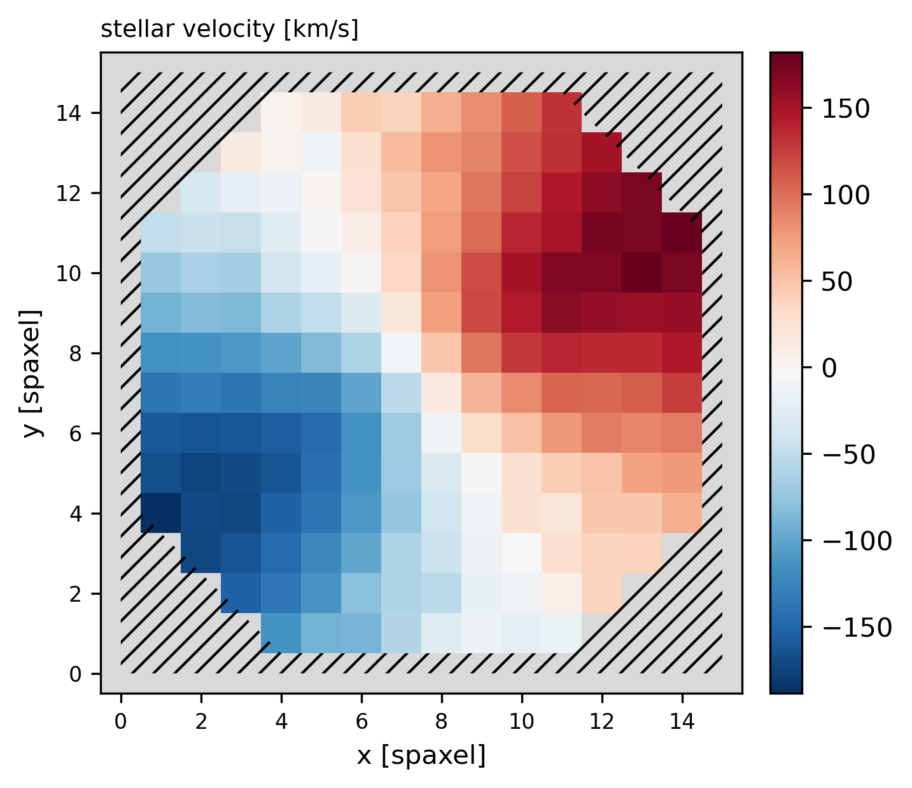
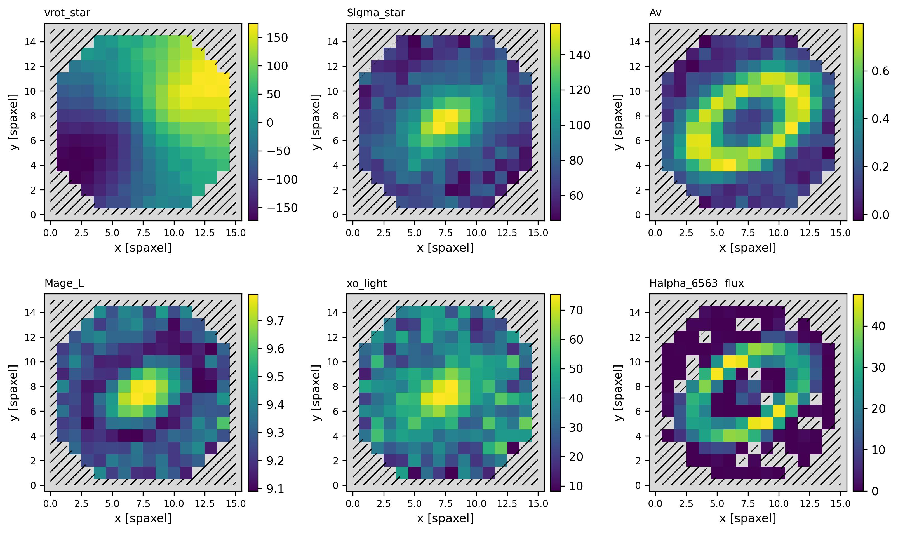
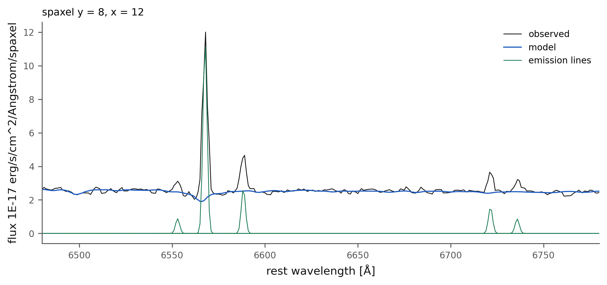
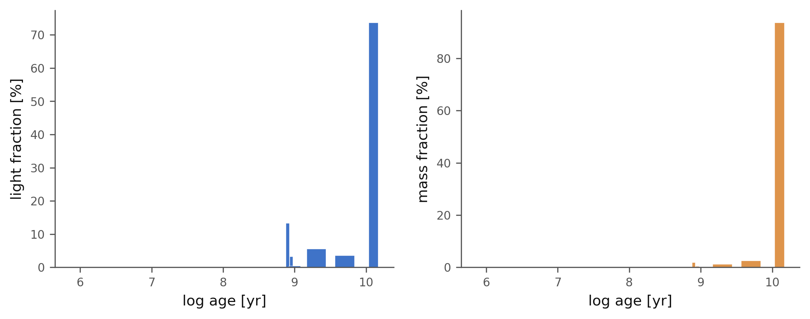
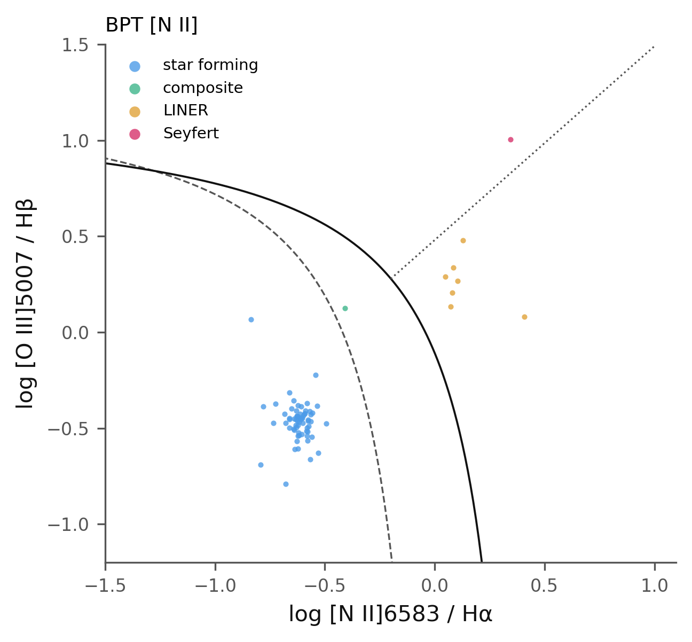
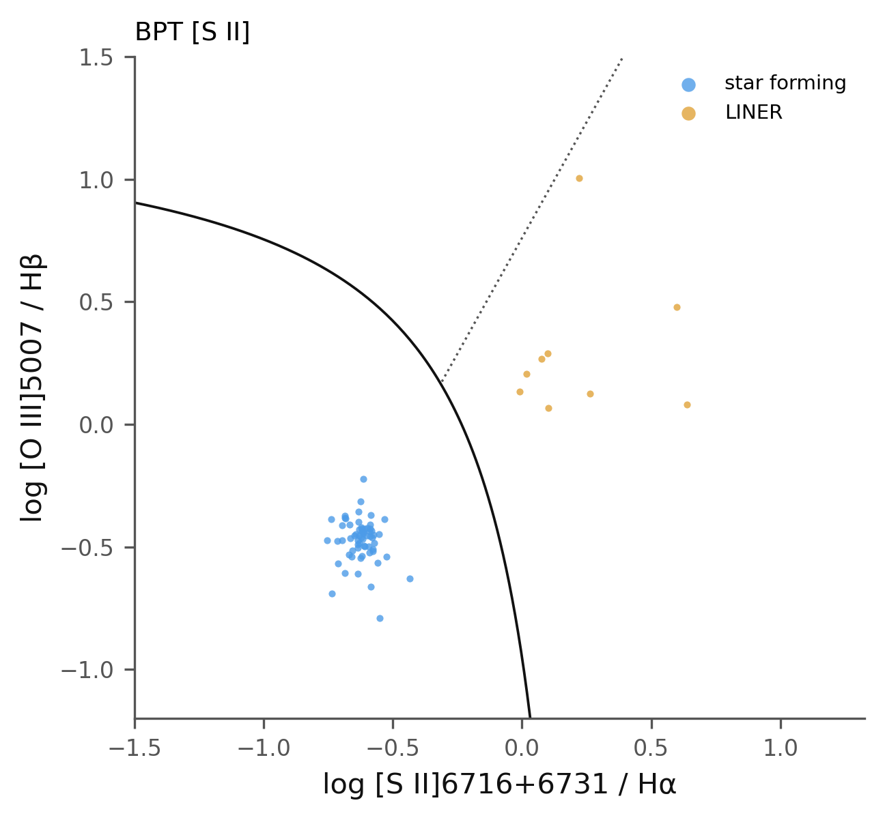
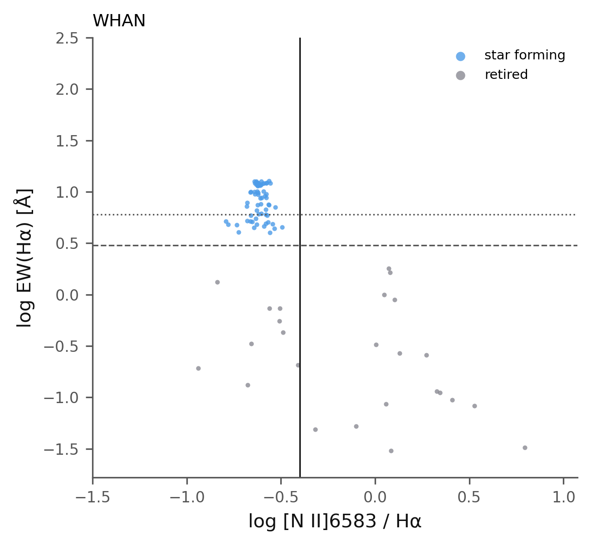
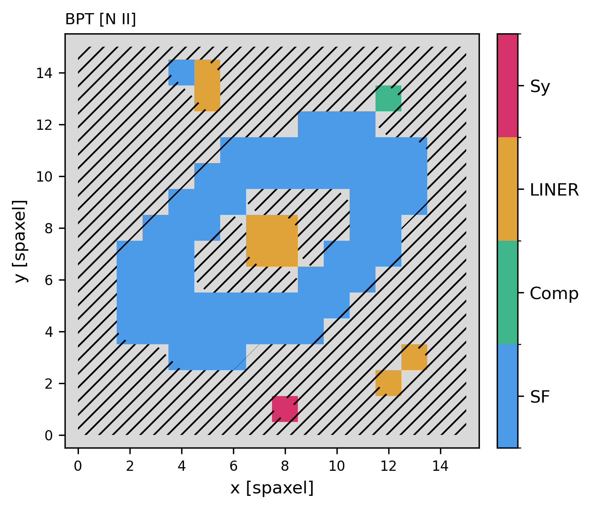

8. Reading a megacube#
A megacube holds every map of a fit. brainsp.read_megacube() opens one
and brainsp.plots draws anything in it, to any image format, without a
display.
"""Tutorial 8: maps, spaxels, diagnostics and exports from a megacube."""
import numpy as np
from astropy.io import fits
import brainsp
c = brainsp.read_megacube("cube_out/mock_cube-BRAIN_MEGACUBE.fits")
P = brainsp.plots
P.map(c, "vrot_star", "t08_velocity.png", cmap="RdBu_r", scale="full",
title="stellar velocity [km/s]")
P.maps(c, ["vrot_star", "Sigma_star", "Av", "Mage_L", "xo_light",
"Halpha_6563 flux"], "t08_page.png")
P.spaxel(c, 8, 8, "t08_spaxel_centre.png")
P.spaxel(c, 8, 12, "t08_spaxel_ring.png", xlim=(6480, 6780))
P.sfh(c, "t08_sfh_centre.png", y=8, x=8)
for kind in ("BPT [N II]", "BPT [S II]", "WHAN"):
P.diagnostic(c, kind, f"t08_{kind.replace(' ', '_').replace('[', '').replace(']', '')}.png")
P.map(c, "BPT [N II]", "t08_bpt_map.png")
files = P.export_maps(c, "maps", ["vrot_star", "Sigma_star", "Av"],
formats=("png", "pdf", "fits"))
print("\n".join(files))
with fits.open("maps/vrot_star.fits") as h:
h.info()
print(repr(h[0].header["CTYPE1"]), repr(h[0].header["CTYPE2"]))
light, mass = c.populations(8, 8)
print("\ncentral spaxel: light in templates older than 5 Gyr:",
f"{light[c.ages[:len(light)] > 5e9].sum():.1f} %")
truth = fits.open("examples/cube/mock_cube.truth.fits")
print("truth (old population light):", f"{100 * truth['OLD'].data[8, 8]:.1f} %")
Output:
maps/vrot_star.png
maps/vrot_star.pdf
maps/vrot_star.fits
maps/Sigma_star.png
maps/Sigma_star.pdf
maps/Sigma_star.fits
maps/Av.png
maps/Av.pdf
maps/Av.fits
Filename: maps/vrot_star.fits
No. Name Ver Type Cards Dimensions Format
0 PRIMARY 1 PrimaryHDU 26 (16, 16) float64
1 TRUST 1 ImageHDU 26 (16, 16) uint8
'RA---TAN' 'DEC--TAN'
central spaxel: light in templates older than 5 Gyr: 77.5 %
truth (old population light): 77.4 %
Maps#
brainsp.plots.map() draws one map. Spaxels that were not fitted are
grey and hatched, never drawn as zero: a megacube stores 0 in an unfitted
spaxel (as the published megacubes do) and 0 is a plausible value of most
quantities, so cube.plane() returns NaN there instead.


brainsp.plots.maps() puts several on one page:

The rotation, the hot bulge, the dusty ring, the old centre and the H\(\alpha\) ring of the truth are all there.
One spaxel#
brainsp.plots.spaxel() draws a spaxel’s observed spectrum, the model and
every fitted emission line; brainsp.plots.sfh() its star-formation
history (y=, x=).


Diagnostic diagrams#
brainsp.plots.diagnostic() draws the [N II] and [S II] BPT diagrams and
the WHAN diagram, every spaxel coloured by its class, with the dividing
curves (see Emission-line diagnostics). The ring falls among the star
forming spaxels and the nucleus among the LINERs, as built.



The classification as a map:


Exporting maps#
brainsp.plots.export_maps() writes each map as an image and as FITS. The
FITS file carries the cube’s sky coordinates (RA---TAN, DEC--TAN) and a
TRUST extension whose bits say why a spaxel is not a measurement, so it can
be used without the megacube. formats= takes any of png, pdf, svg and
fits; without names= it writes every map.